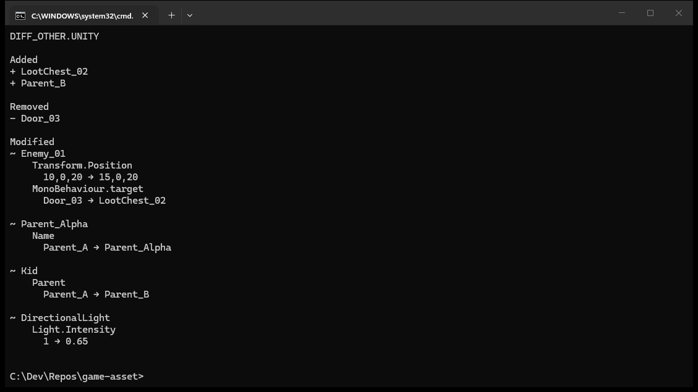
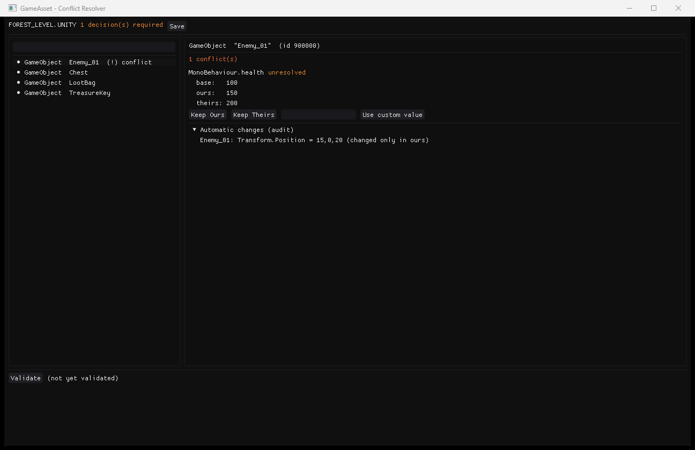

Loading...
Unity scenes shouldn't be Git's problem.
Unity scenes and prefabs are serialized YAML, which makes them miserable to diff, merge, and review through normal Git workflows. GameAsset parses them into a real semantic representation, automatically merges the changes that are safe to merge, and shows you a clear visual decision for every genuine conflict — no manual YAML surgery required.
GameAsset is a standalone desktop tool for Unity teams. It hooks into Git as a merge driver, so it opens automatically the moment a Unity asset conflict happens — not before, not manually. Safe changes merge on their own with a full audit trail; genuine conflicts are presented as a short, visual decision list instead of a wall of YAML.
It's local-first by design: no cloud account, no uploaded project data, and no requirement to have Unity open to merge or validate a scene.
Real output from the actual tool — a semantic diff in the CLI, and a genuine conflict resolved in the desktop UI.


The whole point is that you shouldn't have to think about it.
git pull or git mergeNothing changes about your normal Git workflow.
Registered as a Git merge driver for .unity and prefab files, so this happens automatically once set up.
If there's nothing to decide, it resolves silently. If there is, it tells you exactly how many decisions are required.
Every automatic decision is logged and auditable — nothing is ever silently discarded.
Semantic paths and values, not raw YAML blocks. Keep Ours, Keep Theirs, or set a custom value.
Structure, hierarchy, FileIDs, GUIDs, and references are checked before anything is written back.
The merge completes with a scene Unity can open, no manual cleanup required.